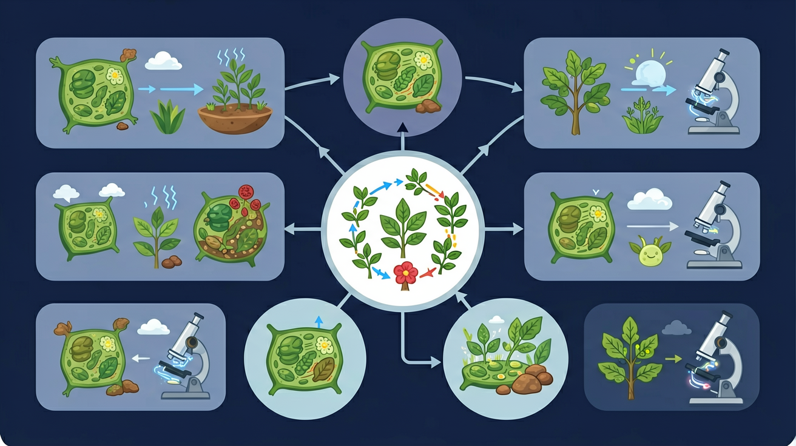
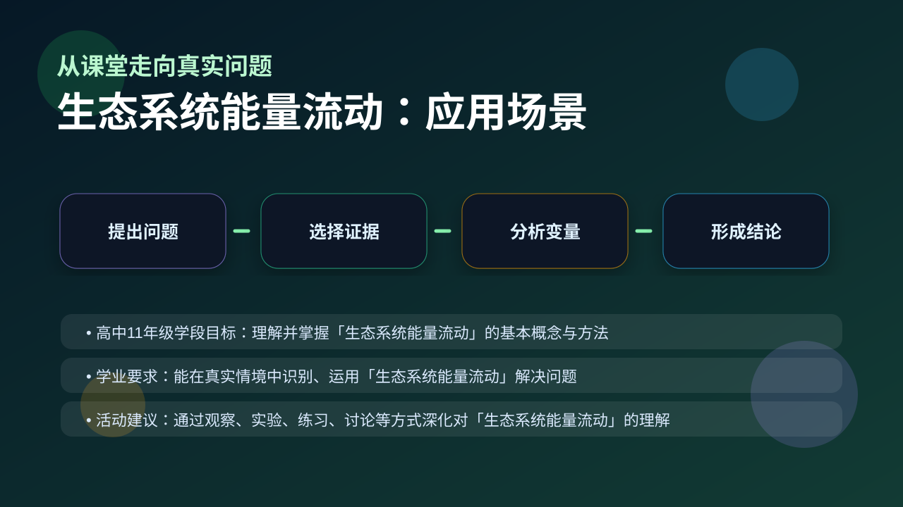

Gallery v1.0.0 · skill v7.14
生命系统怎样在种群、群落和生态系统层面保持动态平衡？

已经知道：学生已掌握食物链与食物网的结构（如生产者→初级消费者→次级消费者），理解光合作用固定太阳能是能量输入源头，并能用箭头表示生物间的捕食关系。
但问题是：学生常误认为能量在食物链中是等量传递的，难以理解‘逐级递减’的数学比例（如10%定律），且易混淆同化量与摄入量的关系，导致能量金字塔绘制错误。
所以学：在设计人工鱼塘时，需计算不同营养级（草鱼→鳙鱼）的合理放养比例，通过能量流动分析确定最优饲料投喂方案，避免能量浪费或生态系统崩溃。
先选一个卡点。后面的例子、互动和 AI 学伴都会围绕它给你最小提示。
选择或输入后，本课会围绕你的问题展开。
生态系统中能量最终去向是？
现象入口：生态系统中能量沿食物链逐级传递，但高营养级获得的能量明显减少。
机制解释：能量流动具有单向流动、逐级递减特点，能量最终以热能形式散失。
证据抓手：证据来自生态金字塔、同化量/摄入量/呼吸量数据和营养级能量计算。
变量线索：生产者固定能量、同化效率、呼吸消耗、营养级长度和人类利用方式。做题时先找变量，再判断机制，最后写证据。
观察能量金字塔中生产者1000千卡到初级消费者150千卡的变化
分解同化量计算公式：传递效率=150/1000×100%=15%
能量单向流动因呼吸消耗和热能散失无法回收
农田除草是为减少杂草与农作物竞争光能
情境：缩短食物链能提高人类可利用能量比例，比如直接食用植物比食用高营养级动物更高效。
作答路径：现象：人类直接食用玉米比通过牛肉获取能量更高效。机制：缩短食物链减少能量散失，玉米→人仅1个营养级传递。证据：若玉米同化量1000 kJ，按15%传递效率，牛肉途径人类仅获22.5 kJ，而直接食用可获1000 kJ。
评分提醒：典型失分：将摄入量当作同化量计算传递效率，或忽视能量单向流动特点认为可循环利用。
用 PhET 观察环境压力如何改变种群中不同表型个体的比例，再讨论它和 生态系统能量流动 的关系。
💡 操作提示：改变环境、捕食者或突变条件，记录种群数量曲线，判断哪些变化是个体层面，哪些是种群层面。
输入生态系统的总能量是生产者固定的太阳能；相邻营养级间只有约 10%-20% 能传递下去，其余以热能散失。
💡 探究任务：调传递效率，观察各营养级能量数值，用“摄入量≠同化量”解释效率为什么不可能接近 100%。
认为能量像物质一样循环，或者把摄入量等同于同化量。
只说“增加/减少”不够，要写清改变的是 生产者固定能量、同化效率、呼吸消耗、营养级长度和人类利用方式 中的哪一个。
没有实验现象、曲线趋势或结构证据，答案就像猜测。
下列哪项属于同化量？
视频用语音和动态画面回顾本课主线：问题情境 → 机制模型 → 证据判断 → 迁移应用。

解释生态农业、能量金字塔和食物链长度限制，都要计算能量去向。
提交后会检查你的解释是否包含现象、机制和变量。
如果学生只说出概念名称，继续追问：题干里哪个证据最关键？这个证据对应分子、细胞、个体还是生态系统层级？如果改变 生产者固定能量、同化效率、呼吸消耗、营养级长度和人类利用方式 中的一个条件，结果会怎样？这三问能把答案从背诵推进到科学解释。
写出能量流动的两个特点
分析为何稻田养鱼模式中鱼的能量利用率高于普通养殖
设计一个缩短食物链的农业生产方案并说明能量优势
若某生态系统生产者同化量为5000 kJ，次级消费者同化量经测量为75 kJ，以下分析正确的是
学习小结：生态系统能量通过生产者固定太阳能单向流动，相邻营养级传递效率10%-20%，最终以热能散失不可循环。
先独立作答，再点选项查看对错与错因。
若蝗虫从水稻获得的同化量为3.15×10⁶kJ，能量传递效率正确的是
能量金字塔能直观展示
蛇粪便中的能量属于
水稻固定的能量中，用于生长繁殖的能量是____kJ
答案：2.925×10⁷
4.5×10⁷×(1-35%)=2.925×10⁷
若蝗虫到青蛙的能量传递效率为12%，则青蛙同化量至少需要____kJ水稻
答案：4.05×10⁷
3.15×10⁶÷12%÷65%=4.05×10⁷
关于能量流动特点的正确叙述是
比较海洋与森林生态系统能量金字塔形状差异
❓ 为什么能量在食物链传递时会越来越少？
❓ 太阳能到底算不算生态系统的能量来源？
❓ 能量金字塔为什么一定是正金字塔形？
学完这一课，这些问题你都能自信地回答。
✅ 分解者独立于营养级之外
💡 混淆营养级划分标准
✅ 传递效率=上一营养级同化量/下一营养级同化量×100%
💡 未理解同化量概念
口诀：能量流动单向跑，传递效率百分十，呼吸消耗少不了
类比：像手机充电：太阳能是充电器，食物链是数据线，每个APP都在耗电